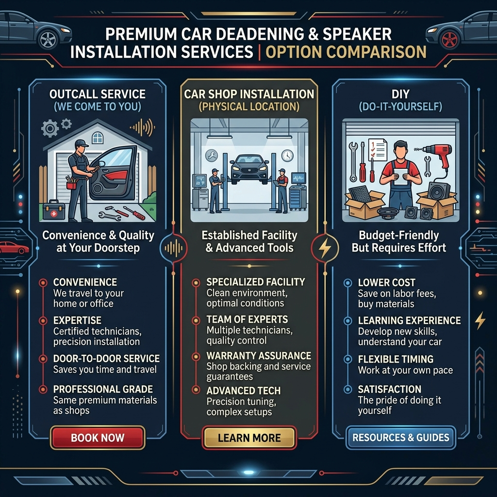

施工事例
Before/After


大阪全域・出張デッドニングで車の静音化
ご自宅の駐車場で完結。専門店より圧倒的に安い！
大阪府の出張デッドニングとは、ご自宅の駐車場でスピーカー交換とドア制振をセットで行う、専門店の半額以下（29,000円〜）で施工可能な出張サービスです。超制振材「レアルシルト」等の材料持込も無料で対応します。
※ 30分で完了・しつこい営業は一切しません
その悩み、特急便がすべて解決します！
デッドニングは、スピーカー交換と同時にやるのが「一番安くて一番効く」んです。
セットで依頼すればコスト大幅カット。施工後は「え、こんなに変わるの？」と
驚かれるお客様が大阪で続出中！
材料持ち込みへのこだわり
ネットの安売り材料、中古パーツもOK。あなたが選んだこだわりの品を大切に扱います。
プロの指先
マッチングサイトで高評価を量産中。配線のビビリ音対策まで、目に見えない場所も手を抜きません。
明朗会計
当日の追加料金なし。出張料も事前に提示します。見積もり金額＝お支払い金額です。
店舗を持たない出張専門だから、家賃も中間マージンもゼロ。
見積もり後の追加請求は一切なし。安心のお約束です。
ご自宅の駐車場で作業完了。店舗への往復の手間がゼロ。
多くの実績を持つ技術者が丁寧に施工。「安い＝手抜き」は絶対にありません。
Amazon・楽天・ヤフオク・中古品。あなたの選んだパーツをプロが取付。
車種とパーツURLを送るだけ。最短30分でお見積もりをお返しします。
車種とスピーカーのURL（またはパーツ名）をLINEで送るだけ！最短30分でお見積もりをお返しします。
お見積もりにご納得いただけたら、ご都合のいい日時を調整します。最短翌日OK！
ご指定の場所（ご自宅の駐車場など）にお伺い。約2〜3時間作業。あなたは家でくつろいでいるだけでOK！
音の確認後にお支払い。見積もり通りの明朗会計で安心です。感動の音質を体感してください！

「Amazonで買ったスピーカー、カー用品店に持ち込んだらデッドニングと合わせて8万円と言われてビックリ。特急便さんはセットで29,000円！施工後の音は本当に感動レベルで、前の音には戻れません。」
「最初は高いと感じましたが、特急便で大正解！ご自宅の駐車場で作業してもらい、待ち時間ゼロ。仕上がりも完璧で、妻にも『いい業者さん見つけたね』と褒められました（笑）」
「DIYに挑戦しようとしたけど断念。特急便さんに頼んだら丁寧な施工で、ビビリ音も完全になくなりました。スピーカーの音が全然違う！次はリアドアもお願いします。」
「このスピーカーなんだけど、工賃いくら？」──そんなご質問だけでも大歓迎です。
※ しつこい営業は一切しません。お気軽にどうぞ！
| メニュー | 工賃（税込） |
|---|---|
| 🏆 フロントドア デッドニング＋スピーカー交換セット フロント左右2枚・材料持込OK |
29,000円〜 |
| スピーカー交換のみ（フロント左右） 材料持込OK |
12,000円〜 |
| デッドニングのみ（フロントドア左右） 制振材・吸音材持込OK |
15,000円〜 |
| リアドア デッドニング＋スピーカー交換セット 材料持込OK |
20,000円〜 |
大阪府でデッドニングを検討中の方必見。3つの選択肢を公平に比較しました。

| 比較項目 | 特急便（出張） | カー用品店 | DIY |
|---|---|---|---|
| 料金（フロントセット） | 29,000円〜 | 70,000〜120,000円 | 材料費15,000円〜 |
| 施工場所 | ご自宅の駐車場 | 店舗へ持込 | 自宅ガレージ |
| 材料持込 | ✅ 完全無料 | ❌ 多くは不可 | ✅（自分で準備） |
| 所要時間 | 約2〜3時間 | 予約待ち＋数時間 | 5〜10時間以上 |
| 技術保証 | ✅ プロ施工 | ✅ プロ施工 | ❌ 自己責任 |
| 追加料金リスク | ✅ ゼロ | ❌ 発生あり | ✅ なし |
※ カー用品店の価格は2026年大阪府地区の一般的な相場。車種・メーカーにより異なります。
専門店の相場 70,000〜120,000円と比較してください
「え、こんなに変わるの？」と、施工直後に驚かれるお客様が続出しています。
大阪の出張デッドニングに関するご質問をまとめました。気になる項目をタップしてご確認ください。
北区・中央区・淀川区・西淀川区・東淀川区・都島区・福島区・此花区・西区・港区・大正区・天王寺区・浪速区・東成区・生野区・旭区・城東区・鶴見区・阿倍野区・住之江区・住吉区・東住吉区・平野区・西成区
堺区・中区・東区・西区・南区・北区・美原区
豊中市・吹田市・高槻市・枚方市・茨木市・寝屋川市・守口市・門真市・大東市・箕面市・摂津市・東大阪市・八尾市
松原市・藤井寺市・羽曳野市・富田林市・河内長野市・岸和田市・和泉市・貝塚市・泉佐野市・泉南市
上記以外の大阪府内エリアもご相談ください。
各地域の施工風景や、車種別のビフォーアフター、お客様の声を詳しく掲載しています。
「自分の車はできるかな？」など、気になる方はぜひご覧ください。
スピーカーは安く買えた。あとは「信頼できるプロ」に任せるだけ。
お見積もりは完全無料。まずはLINEでお気軽にご相談ください。
大阪を中心に毎日駆け回っています！スケジュールに限りがありますので、今すぐご連絡ください。
※ 30分で完了・しつこい営業は一切しません